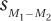

8.2 Calculating the Independent-Samples t Test
The two-sample t test covered in this chapter is the independent-samples t test. The independent-samples t test is used when seeing if there is a difference between the means of two independent populations. For our example, let’s imagine following Dr. Villanova as he replicates part of a classic experiment about factors that influence how well one remembers information (Craik & Tulving, 1975).
260
Dr. Villanova’s participants were 38 introductory psychology students, randomly assigned to two groups. He ended up with 18 in the control group (n1) and 20 in the experimental group (n2). The lowercase n is a new abbreviation that will be used to indicate the sample size for a specific group. Subscripts are used to distinguish the two groups. Here, one might say n1 =18 and n2 = 20 or nControl = 18 and nExperimental = 20. An uppercase N will still be used to indicate the total sample size. For this experiment, N = n1 + n2 = 18 + 20 = 38.
Each participant was tested individually. All participants were shown 20 words (e.g., giraffe, DOG, mirror), one at a time, and asked a question about each word. The control group was asked whether the word appeared in capital letters or not. The experimental group was asked whether the word would make sense in this sentence, “The passenger carried a __________ onto the bus.” The first question doesn’t require much thought, so the control group was called the “shallow” processing group. Answering the second question required more mental effort, so the experimental group was called the “deep” processing group. After all 20 words had been presented, the participants were asked to write down as many words as they could remember. This recall task was unexpected and the number of words recalled was the dependent variable. The shallow processing group recalled a mean of 3.50 words (s = 1.54 words), and the deep processing group a mean of 8.30 words (s = 2.74 words). Here is Dr. Villanova’s research question: Does deep processing lead to better recall than shallow processing?
Box-and-whisker plots are an excellent way to provide a visual comparison of two or more groups. Box-and-whisker plots are data-rich, providing information about central tendency and variability. In Figure 8.2, the number of words recalled is the dependent variable on the Y-axis and the two groups, shallow and deep, are on the X-axis. Both groups are in the same graph, making it easy to compare them on three things, the median, the interquartile range, and the range:
The line in the middle of the box is the median, a measure of central tendency. The median number of words recalled is around 8 for the deep processing group and around 4 for the shallow processing group.
The box that surrounds the line for the median represents the interquartile range, the range within which the middle 50% of scores fall. These middle 50% of scores are often referred to as the average scores for a group, so the interquartile range is a measure of central tendency. Note that in this study, no overlap occurs between these average scores for the two groups.
The interquartile range is also a measure of variability, measured by the distance from the bottom to the top of the box. Taller boxes mean more variability. The box for the deep processing group looks a little taller than the box for the shallow processing group, indicating more variability for the experimental group than for the control group.
The whiskers that extend from the box represent the range of scores, another measure of variability. One can see that participants in the shallow processing group recalled from 1 to 6 words and those in the deep processing group recalled from 4 to 12 words. The whiskers show that there is some overlap in the number of words recalled between the two groups and that there is more variability in the deep processing group than in the shallow processing group.
261
It certainly appears as if deeper processing leads to better memory, and this was the result that Craik and Tulving found back in 1975. But, in order to see if he replicated their results, Dr. Villanova will need to complete a hypothesis test to see if the difference is a statistically significant one.
Step 1 Pick a Test. The first step in completing a hypothesis test is choosing the correct test. Here, Dr. Villanova is comparing the mean of one population to the mean of another population, so he will use a two-sample t test. The two sample sizes are different (nShallow = 18 and nDeep = 20), which means they are independent samples (see Table 8.1). In addition, the cases in one sample aren’t paired with the cases in the other sample, another indicator of independent samples. As the samples are independent, his planned test is the independent-samples t test.
Step 2 Check the Assumptions. Several of the assumptions for the independent-samples t test, listed in Table 8.2, are familiar from the single-sample t test, but one is new.
262
The first assumption, random samples, is one seen before. For the depth of processing study, the participants are intro psych students, specifically ones who volunteered to participate in this study. Dr. Villanova may have used random assignment to place the participants into a control group and an experimental group, but he doesn’t have a random sample of participants. Thus, this assumption was violated and this will have an impact on interpreting the results. However, such an assumption is robust, so he can proceed with the t test.
With participants being randomly assigned to groups, each case participating by him- or herself, and no one participating twice, the second assumption, that each participant’s responding was not influenced by any other participant, was not violated. Dr. Villanova was willing to assume that the third assumption, normality, is not violated. He’s willing to make this assumption because memory is a cognitive ability and most psychological variables like this are considered to be normally distributed. In addition, this assumption is robust as long as N > 30.1
The final assumption is new, homogeneity of variance. This fourth assumption says that the amounts of variability in the two populations should be about equal. Dr. Villanova will assess this by comparing the two sample standard deviations. If the larger standard deviation is not more than twice the smaller standard deviation, then the amounts of variability are considered about equal (Bartz, 1999). For the depth of processing study, the larger standard deviation is 2.74, and the smaller standard deviation is 1.54. The larger standard deviation is not more than twice the smaller standard deviation, so the fourth assumption has not been violated. Dr. Villanova can proceed with the planned independent-samples t test.
A Common Question
Q What’s the point of the homogeneity of variance assumption? What can I do if it is violated?
A As a step in calculating the independent-samples t test, the two sample variances are averaged together. This only gives a meaningful result if the two variances are about the same, homogeneous, to begin with. If the only two siblings in a family are a 192-pound 15-year-old and an 8-pound newborn, it doesn’t mean much to report that the average weight of kids in that family is 100 pounds.
If this assumption is violated, there is a way to reduce the degrees of freedom. This correction causes the critical value of t to fall further out in the rare zone, making it harder to reject the null hypothesis.
Step 3 List the Hypotheses. Nondirectional, or two-tailed, hypotheses are more common than directional, one-tailed hypotheses, so let’s mention those first. Nondirectional hypotheses are used when there is no prediction about which group will have a higher score than the other. In this situation, the null hypothesis will be a negative statement about the two populations represented by the two samples. It will say that no difference exists between the mean of one population, μ1, and the mean of the other population, μ2.
1 There are objective ways to assess the normality assumption, but they are beyond the scope of an introductory statistics book like this one. Those who go on to take more classes in statistics will learn these techniques and will be freed from having to assume that variables are normally distributed.
263
This doesn’t mean that the two sample means, M1 and M2, will be exactly the same. But, the difference between the sample means should be small enough that it can be explained by sampling error if the two samples were drawn from the same population.
The alternative hypothesis will state that the two population means are different. When using a two-tailed test, the alternative hypothesis will just say that the two population means are different from each other; it won’t state the direction of the difference. The implication of the alternative hypothesis is that the two sample means will be different enough that sampling error is not a likely explanation for the difference.
Written mathematically and using the names of the conditions, the hypotheses are
H0: μShallow = μDeep
H1: μShallow ≠ μDeep
Hypotheses like these will always be the null and alternative hypotheses used for a two-tailed independent-samples t test.
Dr. Villanova, however, has directional hypotheses and is doing a one-tailed test. Why is he doing a one-tailed test? Because the original study by Craik and Tulving in 1975 found that deep processing worked better than shallow processing, and Dr. Villanova expects that to be the case in his replication. He has made a prediction about the direction of the results in advance of collecting data, so he can do a one-tailed test.
One-tailed tests require a little more thought on the experimenter’s part in formulating the hypotheses. With one-tailed tests, it is easier to state the alternative hypothesis first. Dr. Villanova’s theory is that deep processing leads to better recall and the alternative hypothesis should reflect this: H1: μDeep > μShallow.
Once the alternative hypothesis is stated, the null hypothesis is formed by making sure that the two hypotheses are all-inclusive and mutually exclusive. If the alternative hypothesis says that deep processing is better than shallow, then the null hypothesis has to say that shallow processing is as good as, or better than, deep processing. The null hypothesis for the one-tailed independent-samples t test would be H0: μDeep ≤ μShallow.
Dr. Villanova, then, would state his hypotheses as
H0: μDeep ≤ μShallow
H1: μDeep ≤ μShallow
Step 4 Set the Decision Rule. The critical value of t, tcv, is the border between the rare and common zone for the sampling distribution of t. tcv is used to set the decision rule and decide whether to reject the null hypothesis for an independent-samples t test.
To find the critical value of t, Dr. Villanova will use Appendix Table 3. To use this table of critical values of t, he needs to know three things: (1) whether he is doing a one-tailed test or a two-tailed test, (2) what alpha level he wants to use, and (3) how many degrees of freedom the test has.
Dr. Villanova predicted in advance of collecting the data that the deep processing participants would do better than the shallow processing participants. And, because he had directional hypotheses, he has a one-tailed test. So, he will be looking at one-tailed values of tcv.
264
By convention, most researchers are willing to have a 5% chance of making a Type I error and set alpha at .05. (Type I error occurs when one erroneously rejects the null hypothesis.) As Dr. Villanova is replicating previous work, he wants to make sure that if he rejects the null hypothesis, it should have been rejected. He wants to have only a 1% chance of Type I error, so he’s setting α = .01.
Finally, the degrees of freedom need to be determined. The formula for calculating degrees of freedom (df) for an independent-samples t test is given in Equation 8.1.
Equation 8.1 Formula for Calculating Degrees of Freedom (df) for an Independent-Samples t Test
df = N – 2
where df = degrees of freedom
N = total number of cases in the two groups
For the depth of processing study, Dr. Villanova calculates df = 38 – 2 = 36. Looking in Appendix Table 3 at the row where df = 36 and under the column where α = .01, one-tailed, we find tcv = 2.434.
The t distribution is symmetric, so this value could be either –2.434 or +2.434. As Dr. Villanova is doing a one-tailed test, he needs to decide whether his critical value of t will be a positive or a negative number. To do so requires knowing: (1) which mean will be subtracted from which in the numerator of Equation 8.1 when it is used to find the t value; and (2) what the sign of the difference should be. The expected sign of the difference is the sign to be associated with the critical value of t for a one-tailed test.
Dr. Villanova has decided that he’ll subtract the shallow processing group’s mean from the deep processing group’s mean. That is, it will be MDeep – MShallow. If his theory is correct, the deep processing group will remember more words than the shallow group, and the difference will have a positive sign. This means that the critical value of t will be positive: 2.434. This value separates the rare zone of the sampling distribution of t from the common zone. The decision rule is shown in Figure 8.3, with the rare and common zones labeled. Here is how Dr. Villanova states the decision rule for his one-tailed test:
265
If t ≥ 2.434, reject the null hypothesis.
If t < 2.434, fail to reject the null hypothesis.
How would things be different if Dr. Villanova were doing a two-tailed test and had set alpha at .05? The degrees of freedom would still be 36, but tcv would be 2.028 and the decision rule would be:
If t –2.028 or if t ≥ 2.028, reject the null hypothesis.
If –2.028 < t < 2.028, fail to reject the null hypothesis.
This critical value of t, 2.028, is closer to zero, the midpoint of the t distribution, than is the critical value of t that Dr. Villanova is actually using, 2.434. This means it would be easier to reject the null hypothesis if Dr. Villanova were using the two-tailed test with α = .05 than with the one-tailed test set at .01 that he is actually using because the rare zone would be larger. He wanted to reduce the likelihood of Type I error, so he has achieved his goal. Table 8.3 summarizes the decision rules for one-tailed and two-tailed two-sample t tests.
Step 5 Calculate the Test Statistic. It is now time for Dr. Villanova to calculate the test statistic, t. In the last chapter, it was pointed out that the formula for a single-sample t test, , was similar to the z score formula, . Though it won’t look like it by the time we see it, the independent-samples t test formula is also like a z score formula. The numerator is a deviation score, the deviation of the difference between the two sample means from the difference between the two population means: (M1 – M2) – (μ1 – μ2). Because hypothesis testing proceeds under the assumption that the null hypothesis is true, if we assume μ1 = μ2, we can simplify the numerator to M1 – M2.
The denominator is a standard deviation, the standard deviation of the sampling distribution of the difference scores. Standard deviations of sampling distributions are called standard errors and this one, called the standard error of the difference, is abbreviated . Calculating the standard error of the difference proceeds in two steps. First we need to calculate variance for the two samples combined, or pooled, and then we need to adjust this pooled variance to turn it into a standard error. Equation 8.2 gives the formula for calculating the pooled variance.
Equation 8.2 Formula for Calculating the Pooled Variance for an Independent-Samples t Test
266

n1 = the sample size for Group (sample) 1
n2 = the sample size for Group (sample) 2
df = the degrees of freedom (N – 2)
This equation says the pooled variance is calculated by multiplying each sample variance by 1 less than the number of cases that are in its sample and adding together these products. That sum is then divided by 2 less than the total number of cases, which is the same as the degrees of freedom.
Let’s follow Dr. Villanova as he plugs in the values from his depth of processing study into Equation 8.2. Remember, the shallow processing group had 18 cases, with a standard deviation of 1.54; the sample size and standard deviation for the deep processing group were 20 and 2.74, respectively. The equation calls for variances, not standard deviations, but a variance is simply a squared standard deviation, so we are OK. And the equation calls for the degrees of freedom, which we calculated in the previous step as N – 2 = 38 – 2 = 36:
The pooled variance is 5.08. We can now use the pooled variance to find the standard error of the mean by using Equation 8.3.
Equation 8.3 Formula for the Standard Error of the Mean,
sM1-M2, for an Independent-Samples t test
s2Pooled = the pooled variance (from Equation 8.2)
N = the total number of cases
n1 = the number of cases in Group 1
n2 = the number of cases in Group 2
267
This formula says that to find the standard error of the difference, one finds the quotient of the total sample size divided by the two individual sample sizes multiplied together. This quotient is multiplied by the pooled variance. Finally, in a step that is often overlooked, the square root of the product is found. In essence, this is similar to what was done in calculating the standard error of the mean, where the standard deviation was divided by the square root of N.
Let’s do the math for the shallow vs. deep processing study:
At this point, the hardest part of calculating an independent-samples t test is over and Dr. Villanova knows that the standard error of the mean is 0.73. All that is left to do is use the formula in Equation 8.4 to find t.
Equation 8.4 Formula for an Independent-Samples t Test

where t = the independent-samples t test value
M1 = the mean of Group (sample) 1
M2 = the mean of Group (sample) 2
Equation 8.4 says that an independent-samples t value is calculated by dividing the numerator, the difference between the two sample means, by the denominator, the standard error of the difference. Dr. Villanova, because he is doing a one-tailed test, has already decided that he will be subtracting the shallow processing group’s mean, 3.50, from the deep processing group’s mean, 8.30:
268
The test statistic t that Dr. Villanova calculated for his independent-samples t test is 6.58 and Step 5 of the hypothesis test is over. We’ll follow Dr. Villanova as he covers Step 6, interpretation, after working through the first five steps with another example.
Worked Example 8.1
For practice with an independent-samples t test, let’s use an urban example. Dr. Risen, an environmental psychologist, wondered if temperature affected the pace of life. She went to Fifth Avenue in New York City, randomly selected pedestrians who were walking alone, timed how long it took them to walk a block, and converted this into miles per hour (mph).
She did this on two days, one a 20°F day in January and the other a 72°F day in June. Each time, she used the same day of the week and the same hour of the day. She also made sure that on both days there were blue skies and no obstructions, like snow or trash, on the sidewalk. On the cold day she timed 33 people, and on the warm day she timed 28. Her total sample size, N, was 61.
The results, displayed in Figure 8.4, show that people walked faster on the cold day (M = 3.05 mph, s = 0.40 mph) than on the warm day (M = 2.90 mph, s = 0.39 mph). The results suggest that people pick up their pace when it is cold outside. Let’s follow Dr. Risen as she determines if the effect is a statistically significant one. To do so, she’ll use the six steps of hypothesis testing. We’ll follow her through the first five steps in this section and then tag along for the sixth step, interpretation, in the next part of this chapter.
Step 1 Pick a Test. Two groups of people, those walking on a cold day vs. those walking on a warm day, are being compared in terms of mean walking speed. This calls for a two-sample t test. Using Table 8.2, Dr. Risen concludes that the samples are independent—each sample is a random sample from its respective population, the cases in the two samples aren’t paired, and the two sample sizes are different. Thus, the appropriate test is the independent-samples t test.
269
Step 2 Check the Assumptions.
The random samples assumption is not violated as pedestrians were randomly selected.
The independence of observations assumption is not violated. Only one case was observed at a time, each person was walking alone, and no person was timed twice. So, no other cases influenced a case.
The normality assumption is not violated. Dr. Risen is willing to assume that a physical trait, like walking speed, is normally distributed. Plus, her sample size is large, greater than 50, and this assumption is robust if the sample size is large.
The homogeneity of variance assumption is not violated. The two standard deviations are almost exactly the same (sCold = 0.40 mph and sWarm = 0.39 mph).
Step 3 List the Hypotheses. Dr. Risen is doing an exploratory study. She’s investigating whether temperature affects the pace of life. Hence, her test is two-tailed, and her hypotheses are nondirectional:
H0: μCold = μWarm
H1: μCold ≠ μWarm
The null hypothesis says that there is no difference in walking speed in cold weather vs. walking speed in warm weather for the two populations. The alternative hypothesis says that the two population means—walking speed in cold weather vs. walking speed in warm weather—are different.
Step 4 Set the Decision Rule. To set the decision rule, Dr. Risen must find a critical value of t in Appendix Table 3. To do so, she needs three pieces of information: (1) whether the test is one-tailed or two-tailed, (2) what alpha level is selected, and (3) how many degrees of freedom there are.
The hypotheses were nondirectional, so she’s doing a two-tailed test.
She’s willing to run the standard, 5%, risk of making a Type I error, so α = .05.
Applying Equation 8.1 to her total sample size, N = 61, she calculates degrees of freedom as df = 61 – 2 = 59.
Turning to the table of critical values of t, she looks for the intersection of the column for a two-tailed test with α = .05, the bolded column, and the row for df = 59. However, there is no row for df = 59. What should she do? She’ll follow The Price Is Right rule (see Chapter 7) and use the critical value found in the row for the degrees of freedom that are closest to her actual degrees of freedom without going over it. In this instance, that means the row with df = 55. The critical value of t is ±2.004. The sampling distribution of t with this critical value of t is shown in Figure 8.5.

Here’s her decision rule:
If t ≤ –2.004 or if t ≥ 2.004, reject the null hypothesis.
If –2.004 < t < 2.004, fail to reject the null hypothesis.
270
A Common Question
Q Why do statisticians use The Price Is Right rule and, if the actual degrees of freedom aren’t in the table of critical values, use the value that is closest without going over the actual value?
A Statisticians like to make it difficult to reject the null hypothesis. Using a critical value associated with a smaller number of degrees of freedom means that the rare zone is smaller and so it is harder to reject the null hypothesis.
Step 5 Calculate the Test Statistic. The first step in finding the t value is to use Equation 8.2 to calculate the pooled variance. Once that is done, Dr. Risen can use Equation 8.3 to find the standard error of the difference and Equation 8.4 to calculate the value of the test statistic.
As a reminder, here is the information Dr. Risen has to work with:
Cold day: n = 33, M = 3.05 (mph), s = 0.40 (mph)
Warm day: n = 28, M = 2.90 (mph), s = 0.39 (mph)
Let’s follow as Dr. Risen plugs the values into Equation 8.2 to find  :
:
271
The next step is to use Equation 8.3 to find the standard error of the difference:
Now that she knows , Dr. Risen can go on to complete Equation 8.4 and find the t value:
The value of the test statistic, t, is 1.50. This completes Step 5.
A Common Question
Q Is it possible to calculate the standard error of the estimate without computing the pooled variance first?
A With a little algebraic rearranging, almost anything is possible. Here is the combination of Equations 8.2 and 8.3:
Practice Problems 8.2
Apply Your Knowledge
8.04 Previous research has shown that people who have served in the U.S. Armed Forces feel more patriotic about America. A researcher obtains a sample of veterans and a sample of nonveterans, and administers the interval level Sense of Patriotism Scale (SPS). Higher scores on the SPS indicate greater patriotism. The researcher expects to replicate previous research. Write the researcher’s null and alternative hypotheses.
272
8.05 If n1 = 12, s1 = 4, n2 = 16, and s2 = 3, calculate and .
8.06 If M1 = 99, M2 = 86, and calculate t.